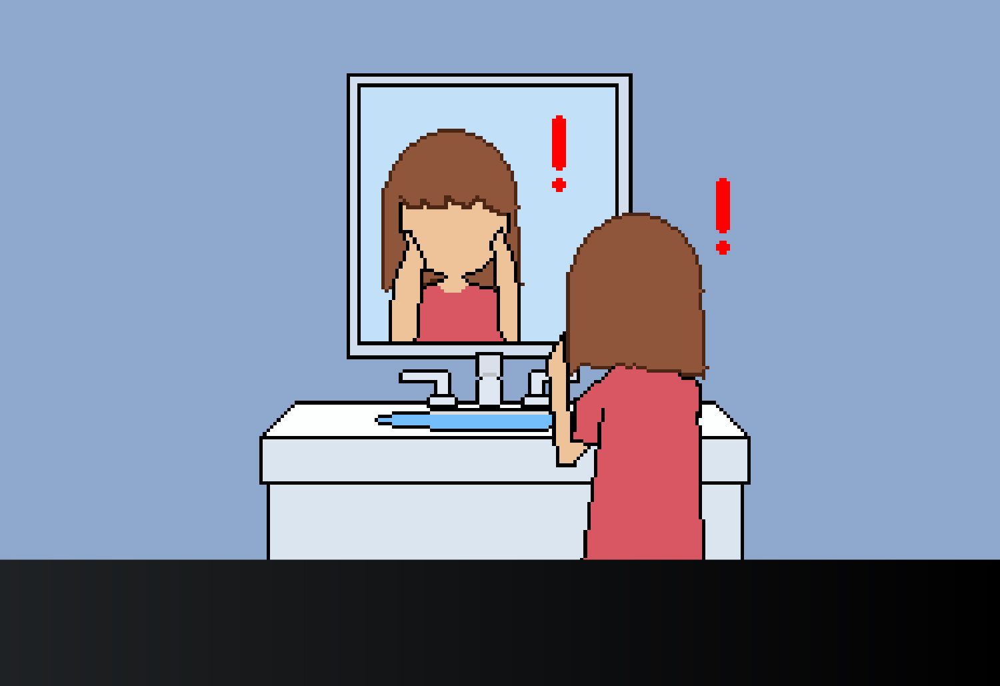
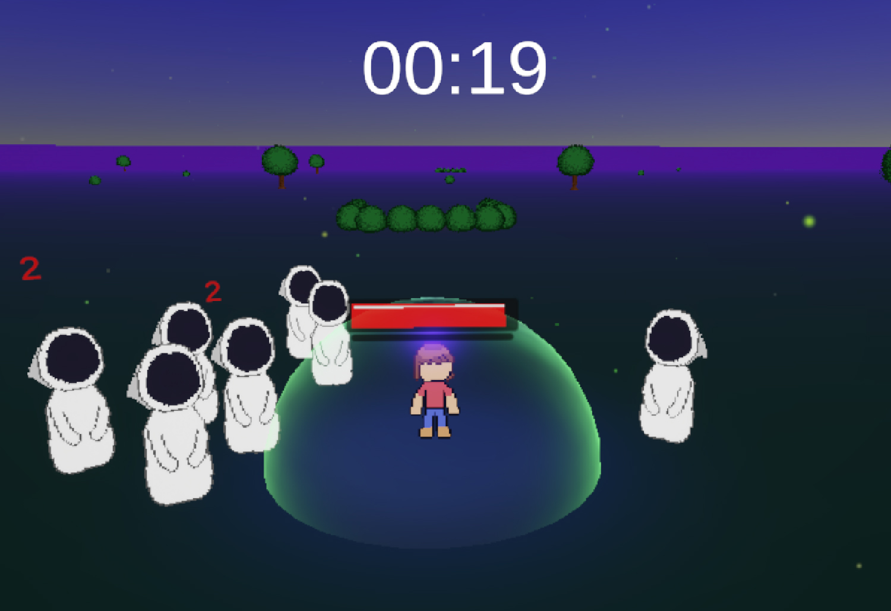
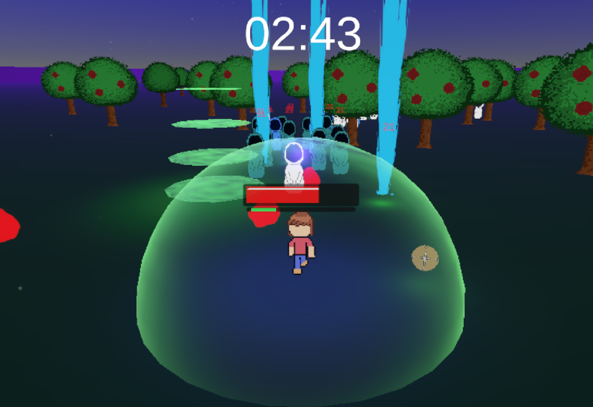

Pizza Pasta Mayhem
Videojuego hecho para la materia Taller de Arte y Diseño Digital IV de la Licenciatura en Arte y Diseño digital IV de la Univerisdad del Salvador. Rol principal: Programador. Click al juego en Itch.io


Bush Forest: El valle de los golems
Videojuego hecho para la materia Diseño y desarrollo de videojuegos 1 de la Licenciatura en Arte y Diseño digital IV de la Univerisdad del Salvador. Rol principal: Artista, programador y game design. Click al juego en Itch.io


Las aventuras de Mentita
Videojuego hecho para la materia Programación 2 de la Tecnicatura Universitaria en Desarrollo y Producción de Videojuegos de la Universidad Tecnológica Nacional (UTN). Rol principal: Artista, programador y game design. Click al juego en Itch.io



Zeroface Survivor
Videojuego hecho para la Global Game Jam 2026 Click al juego en Itch.io

